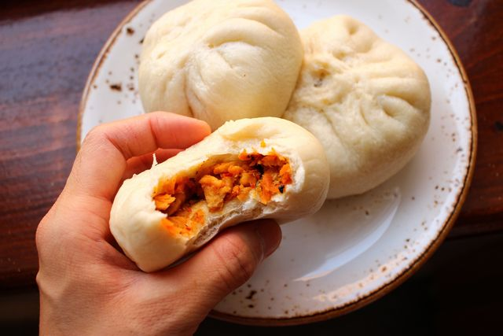

Bao buns

There are endless variations on the steamed bun across different cultures and regions: different dough recipes, different fillings, different cooking methods.
Ingredients
- Bao bun dough mix
- Cabbage
- Onion
- Five spice
- Salt
- Garlic
- Soy sauce
- Sesame seeds to garnish(optional)
Steps
- Roll the dough out
- Cut the vegetables
- Mix the vegetables
- stuff the dumplings
- Cook them in a steamer
- Serve with soy sauce to dip!
- Enjoy!
return